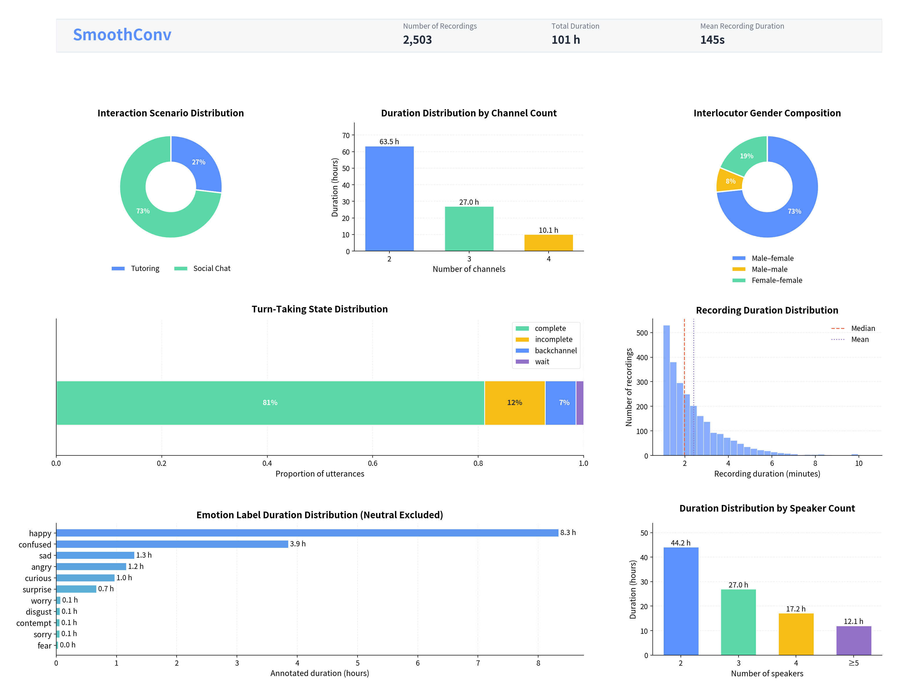
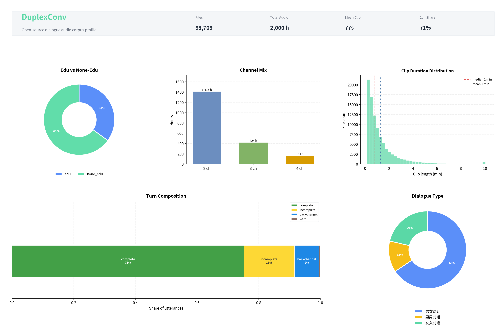

真实多方交谈中的话轮交叠、停顿与非言语事件——下方可直接播放标注可视化样例，并浏览数据分布统计。
双子星数据集
同源中文自然对话，两种标注粒度，分别服务精细建模与大规模预训练。
| SmoothConv | DuplexConv | |
| 规模 | 100 小时 · 2,503 条 | 2,000 小时 · 93,709 条 |
| 标注方式 | 专家级人工精标 | 大模型自动化标注 |
| 核心标签 | 音字对齐 · 话轮/重叠/停顿 · 声音事件 · 性别 · 情感 | 长上下文语义 · 副语言 · 氛围标签 |
| 适用方向 | 微调 · 基准评测 · 交互策略建模 | Speech LLM 预训练 · 流式音频理解 |
标注样例
同一领域下并排对比 SmoothConv 与 DuplexConv 的标注可视化效果。
教育垂类
SmoothConv
人工精标
DuplexConv
自动标注
通用领域
SmoothConv
人工精标
DuplexConv
自动标注
数据分布
SmoothConv 与 DuplexConv 开源版本的数据构成概览。


全双工应用场景
数据集如何支撑「边听边想、适时中断、精准感知」的连续交互。
-
01
话轮预测与端点检测
话轮转换与停顿标签用于训练 VAD 与 turn-taking 模型，降低交互延迟。
-
02
复杂环境下的中断决策
多通道长音频中的声音事件与非结构化交谈，帮助系统建立过滤与拒绝策略。
-
03
副语言理解与拟人回复
情绪与氛围标签使全双工系统能捕捉说话者意图，生成更自然的回应。